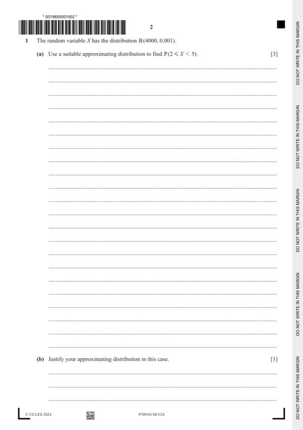
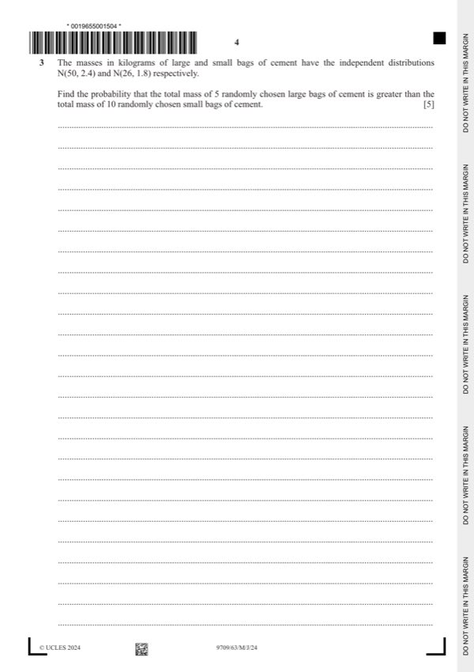
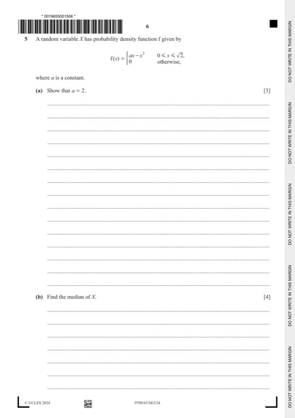
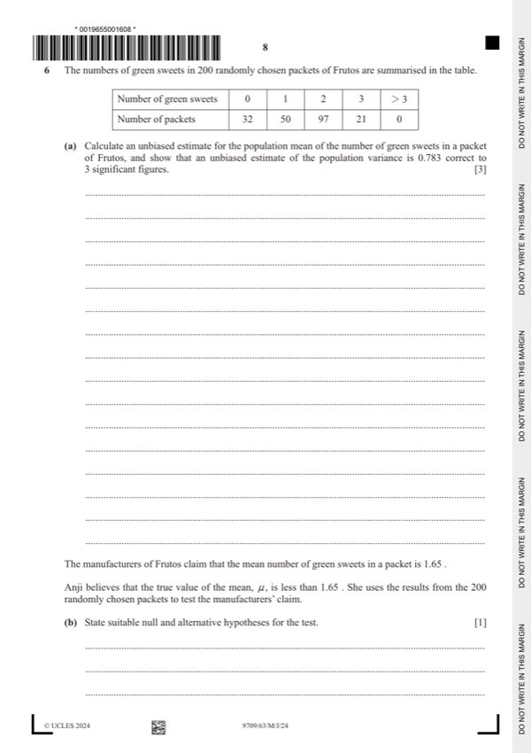
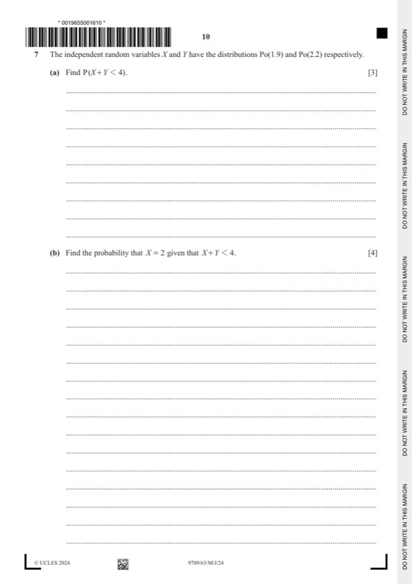

Question 0
Part 0 — solution
- [M1] Standardising with their values
Mark points
- [M1] Standardising with their values
Step-by-step solutions based on the mark scheme (not a mark-scheme dump).
Part 0 — solution

Part 1(a) — solution
Part 1 — solution
Part 1 — solution
Part 1 — solution
Answer: 246
Part 2 — solution
Answer: 3 4
Part 2(a) — solution
Part 2 — solution
Part 2 — solution
Part 2 — solution

Part 3 — solution
Part 3 — solution
Part 3 — solution
Part 3 — solution
Part 3 — solution
Part 3 — solution
Part 3 — solution
Part 3 — solution
Part 4 — solution
Part 4 — solution
Answer: A1
Part 4 — solution

Part 5 — solution
Part 5(a) — solution
Part 5(c) — solution

Part 6(a) — solution
Answer: 200
Part 6(c) — solution
Part 6 — solution

Part 7(a) — solution
Part 7(c) — solution
Part 60 — solution